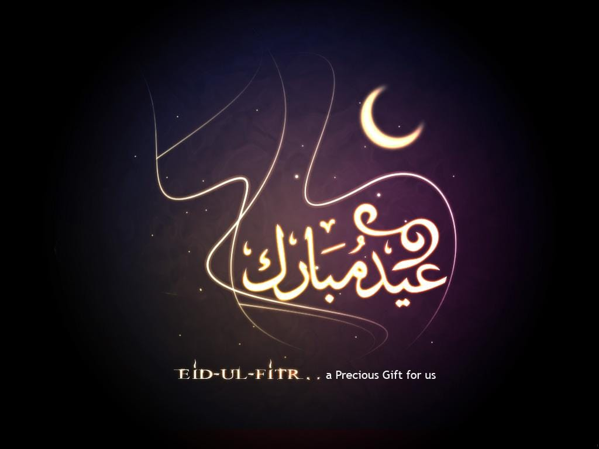
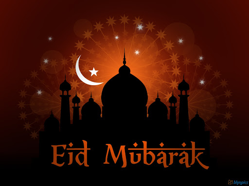

Eid al fitr is considered one of the most important subjects
to write about, Eid al fitr is a religion feast celebrated by
Muslims, it starts after Ramadan for a three days and it's the
feast when Muslims start to break their fasting during Ramadan
month.
Eid al fitr is considered one of the most important subjects Eid al fitr is considered one of the most important subjects
Eid al fitr is considered one of the most important subjects Eid al fitr is considered one of the most important subjects
Eid al fitr is considered one of the most important subjects Eid al fitr is considered one of the most important subjects
Eid al fitr is considered one of the most important subjects Eid al fitr is considered one of the most important subjects